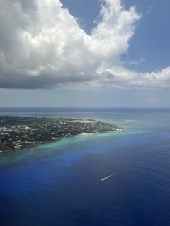
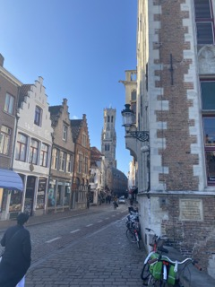
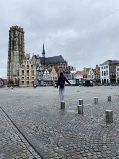

Travel
Below are pictures from my three most recent trips outside of the country and my overall experience rating.
Cayman Islands
May 2024 | Rating 9/10
I really enjoyed this trip! The people were so welcoming and nice. I got my scuba diving lisence on this trip, which was probably the most memorable part of my experience. The food is also very expensive but it is such a cool island with a lot to do. Here is a video of the top ten things to do when traveling there.
Thailand
December 2022 | Rating 10/10
My mother is from Thailand, so my rating is biased but Thailand is definitely my favorite place in the world. The food is so authentic and pricing is very cheap. I really reccommend visiting!


Belgium
March 2020 | Rating 6/10
I was in Belgium right at the peak of COVID so there weren't a lot of things open/available to do. It was also chilly and rainy. I think if I were to go back at a different time of year I would enjoy it more. Still such a beautiful country, the people are so nice and I loved the architecture.
 